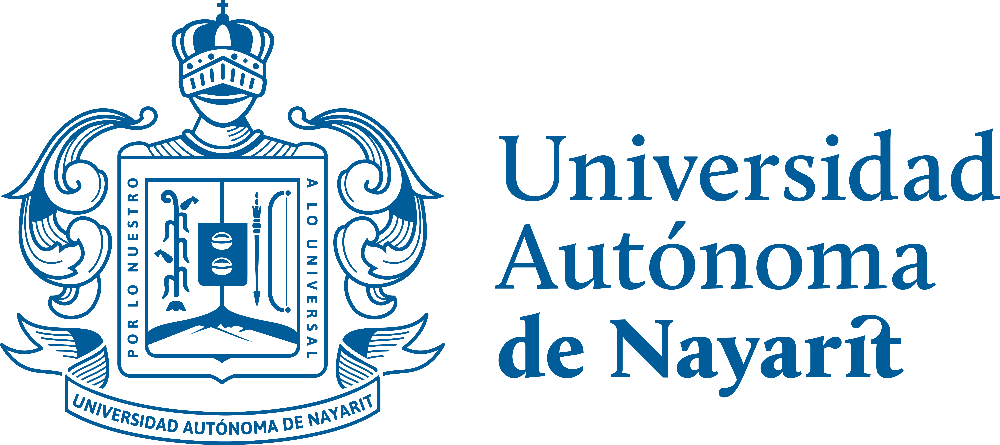
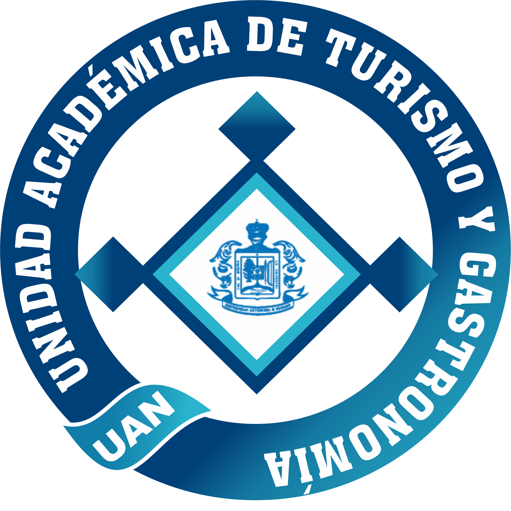

Pág. 1 / 17


Documento Rector
Sustentabilidad, Entorno, Turismo y Gastronomía
“Cultivando conocimiento, cosechando futuro.”

La “1ra ECO-SEMANA UATyG 2026: Sustentabilidad, Entorno, Turismo y Gastronomía” representa una propuesta académica interdisciplinaria orientada a fortalecer la identidad sustentable de la Unidad Académica de Turismo y Gastronomía mediante experiencias formativas, prácticas y comunitarias.
El proyecto surge con la intención de trascender el formato tradicional de semanas académicas o eventos temporales, proponiendo en su lugar una plataforma integral de aprendizaje y participación que deje un legado institucional permanente.
La Eco-Semana no se concibe únicamente como una serie de conferencias y talleres, sino como el inicio formal de una nueva cultura universitaria enfocada en la sustentabilidad aplicada al turismo, la gastronomía y el aprovechamiento responsable del entorno.
Como resultado tangible del proyecto, se plantea la inauguración oficial del Huerto Académico y la Estación de Compostaje de la UATyG, espacios concebidos como laboratorios vivos de aprendizaje práctico, innovación académica y participación estudiantil.
En el contexto actual, las instituciones educativas enfrentan el desafío de formar profesionales capaces de responder a problemáticas ambientales, sociales y económicas desde una perspectiva interdisciplinaria y sustentable.
La industria turística y gastronómica, particularmente, atraviesa una transformación global donde conceptos como sostenibilidad, economía circular, producción local, turismo regenerativo y aprovechamiento responsable de recursos adquieren cada vez mayor relevancia.
Frente a este panorama, la Unidad Académica de Turismo y Gastronomía tiene la oportunidad de consolidarse como un referente universitario en innovación sustentable mediante la creación de espacios de aprendizaje experiencial que conecten la teoría con la práctica.
La 1ra ECO-SEMANA UATyG 2026 busca precisamente generar esta conexión, integrando actividades académicas, prácticas y comunitarias capaces de fortalecer la formación profesional de los estudiantes mientras se construye un proyecto institucional de largo alcance.
La creación de la 1ra ECO-SEMANA UATyG 2026 nace de la necesidad de alinear a la Unidad Académica de Turismo y Gastronomía con las tendencias globales de sustentabilidad, responsabilidad ambiental e innovación educativa.
Actualmente, las universidades no solo deben formar profesionistas técnicamente competentes, sino también ciudadanos capaces de comprender y responder a los retos ambientales y sociales contemporáneos.
En este sentido, la Eco-Semana representa una estrategia académica que permitirá integrar conocimientos teóricos y prácticos mediante actividades interdisciplinarias vinculadas con:
Además de su valor académico, el proyecto busca dejar un legado institucional tangible mediante la creación del Huerto Académico y la Estación de Compostaje, espacios permanentes destinados al aprendizaje práctico, la integración estudiantil y la apropiación sustentable del entorno universitario.
La sustentabilidad se ha convertido en uno de los principales ejes de transformación dentro de las industrias turísticas y gastronómicas a nivel mundial.
Hoteles, restaurantes, destinos turísticos y espacios urbanos integran cada vez más prácticas relacionadas con:
Bajo este contexto, la formación universitaria debe evolucionar hacia modelos educativos más experienciales y participativos.
El proyecto de la Eco-Semana responde precisamente a esta necesidad, permitiendo que los estudiantes no solo reciban información teórica, sino que participen activamente en la creación, implementación y mantenimiento de espacios sustentables reales.
La integración del Huerto Académico permitirá desarrollar un entorno de aprendizaje permanente donde los estudiantes podrán experimentar procesos relacionados con:
Inaugurar de manera oficial el Huerto Académico y la Estación de Compostaje de la UATyG mediante una semana intensiva de capacitación, integración y aprendizaje interdisciplinario orientado a la sustentabilidad aplicada al turismo y la gastronomía.
La Eco-Semana UATyG 2026 se fundamenta en la idea de que la sustentabilidad debe vivirse, experimentarse y construirse colectivamente.
Más allá de un evento temporal, el proyecto busca sembrar una nueva cultura universitaria basada en:
El concepto central del proyecto puede resumirse en una frase:
“Transformar una semana académica en un legado permanente para la UATyG.”
La 1ra ECO-SEMANA UATyG 2026 se plantea como una experiencia académica inmersiva que combina:
El evento se estructura bajo un modelo híbrido entre formación académica y experiencia participativa, donde los estudiantes no solo asisten a actividades, sino que forman parte activa del proyecto.
Aplicación de ingredientes frescos, aromáticas y productos de proximidad en la cocina contemporánea.
Desarrollo de sistemas de cultivo adaptados a espacios urbanos y educativos.
Capacitación en compostaje y aprovechamiento de residuos orgánicos.
Análisis del paisajismo y los espacios verdes como herramientas de desarrollo turístico.
Fortalecimiento del trabajo colaborativo y apropiación de espacios universitarios.
La Eco-Semana permitirá fortalecer las competencias profesionales de los estudiantes mediante experiencias de aprendizaje práctico vinculadas directamente con las tendencias contemporáneas del turismo y la gastronomía.
Los estudiantes podrán desarrollar habilidades relacionadas con:
Asimismo, el Huerto Académico funcionará como un laboratorio vivo capaz de integrarse a futuras prácticas, talleres y proyectos interdisciplinarios.
La implementación del proyecto fortalecerá la identidad institucional de la UATyG mediante:
La Eco-Semana tiene potencial para consolidarse como un evento anual insignia de la unidad académica.
El proyecto contribuirá al desarrollo de una cultura ambiental universitaria enfocada en:
Además, permitirá fortalecer la convivencia estudiantil y el trabajo colaborativo entre ambas licenciaturas.
El Huerto Académico será un espacio permanente destinado al aprendizaje práctico, la experimentación y la convivencia universitaria.
Se contempla integrar:
Las principales especies contempladas incluyen:
La estación de compostaje tendrá como objetivo aprovechar residuos orgánicos generados dentro de la unidad académica para producir composta destinada al mantenimiento del Huerto Académico.
El sistema permitirá:
Como parte de la modernización del evento, se plantea la implementación de un sistema digital de gestión académica y participación estudiantil.
Este sistema incluirá:
El objetivo es generar una experiencia organizada, innovadora y alineada con tendencias tecnológicas contemporáneas.
La Eco-Semana busca que los estudiantes vivan una experiencia activa e inmersiva.
Por ello, el proyecto contempla:
Las actividades estarán divididas entre:
Conferencias, paneles y charlas académicas.
Talleres prácticos, experiencias colaborativas y actividades de aplicación.
Conferencia Magistral:
“El Huerto como Atractivo: Paisajismo Urbano y Agroturismo”
Taller:
“Introducción a la Hidroponía”
Conferencia:
“Economía Circular y Reducción de Desperdicios en la Cocina”
Taller:
“Estación de Compostaje”
Conferencia:
“Botánica Culinaria: El Valor del Entorno en la Alta Cocina”
Taller:
“Producción de Germinados y Brotes”
Panel:
“Comunidad y Espacios Universitarios Sustentables”
Taller:
“Ensaladas, Aderezos y Emplatados Técnicos”
Gran inauguración oficial del Huerto Académico y la Estación de Compostaje.
La jornada de clausura estará destinada a la inauguración oficial del proyecto mediante:
La intención es consolidar el cierre del evento como una experiencia significativa y representativa para la comunidad universitaria.
La Eco-Semana contará con una identidad visual contemporánea y profesional alineada con conceptos de:
La difusión incluirá:
Se propone integrar un comité organizador conformado por estudiantes y docentes responsables de:
El proyecto requerirá recursos relacionados con:
La Eco-Semana tiene potencial para generar vinculación con:
La 1ra ECO-Semana UATyG 2026 representa el inicio de una estrategia institucional orientada a consolidar una cultura universitaria sustentable.
Se contempla que el proyecto evolucione hacia:
El objetivo a largo plazo es consolidar a la UATyG como un referente universitario en sustentabilidad aplicada al turismo y la gastronomía.
La 1ra ECO-SEMANA UATyG 2026 no representa únicamente un evento académico.
Representa una propuesta de transformación institucional basada en la sustentabilidad, la innovación y la construcción colectiva de espacios de aprendizaje permanente.
A través del Huerto Académico, la Estación de Compostaje y las actividades interdisciplinarias planteadas, el proyecto busca fortalecer la formación profesional de los estudiantes mientras se construye una nueva identidad universitaria orientada al futuro.
Más allá de las actividades programadas, la Eco-Semana pretende dejar una huella tangible y simbólica dentro de la comunidad académica.
Porque lo que se busca sembrar no son únicamente plantas o espacios verdes. Lo que se busca sembrar es una nueva cultura universitaria.
“Lo que sembramos hoy, transformará el entorno universitario mañana.”
ECO-SEMANA UATyG 2026
Desarrollamos una Plataforma Web Exclusiva conectada en tiempo real para garantizar el orden de los créditos.
El alumno elige 3 conferencias y 2 talleres exactos desde la plataforma.
Un código QR dinámico que agiliza las filas y el acceso.
Entrega automática de base de datos final de alumnos que cumplieron los créditos.
García López, Juan
Matrícula: 23456781 | Grupo: D5